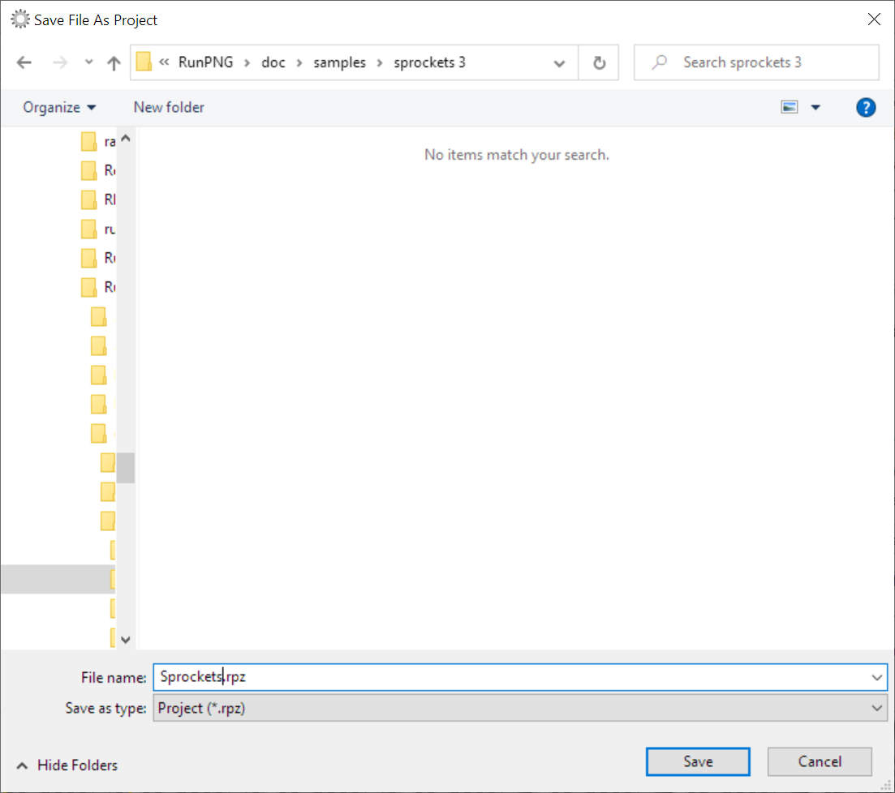

Project File
The Point of a Project File
If you load a sequence of individual images or a complete animation into RunPNG, the original individual images in the memory always remain unchanged. If changes take place, this is always done with a copy for display. This copy is also only available once, in order not to unnecessarily inflate the storage requirements.
No matter how many individual steps the user undertakes in their work, they can either be undone with the Undo function, or the user simply switches the option in question off again.
This behavior is nice and useful. But after the APNG file has been saved and another image has been loaded, all changes are permanent. Because only the result of the work is saved. The finished file knows nothing of the individual work steps.
This is where the project file comes into play. The project file contains the individual images and effect images in their original form and all work steps that are relevant for the creation of the image. However, it does not contain the Undo memory or deleted individual images.
Save a Project File
Saving a project file is as easy as saving the image. There is also the Save as Project ... item in the File menu or the associated button in the toolbar.
The project will be saved with the extension .rpz. "rpz" stands for RunPNG Project Zipped. Which already says something about the nature of the file. It is a compressed ZIP file that can easily be opened with WinZip, 7-Zip and similar programs. It contains the original images in PNG format as well as metadata in XML format for the restoration of the work steps.
But even if we find the familiar ZIP format here: Just look, don't touch. More precisely, do not change anything. Because that could make the project file unusable.